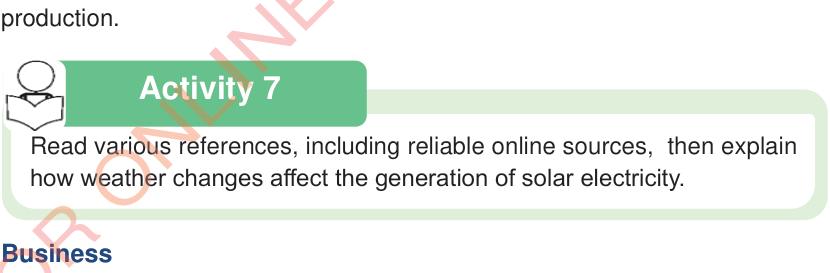

Activity 7

Read various references, including reliable online sources, then explain how weather changes affect the generation of solar electricity.

Read various references, including reliable online sources, then explain how weather changes affect the generation of solar electricity.